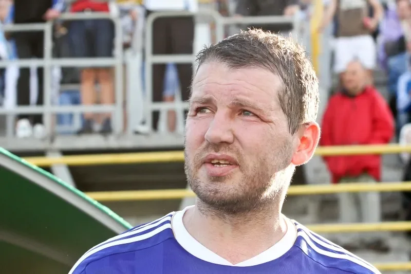

Photo source ↗Oleg Dubyna (doa.in.ua) · CC BY-SA 3.0
The profile
Oleg Salenko
Oleg Salenko was born in Leningrad and entered senior football with Zenit. He developed as a striker before spells with Dynamo Kyiv and clubs in Spain and Scotland.
He played close to the last defender, looking for space to finish quickly. His club career took him to Valencia and Rangers, but his most enduring moment came with Russia at the World Cup.
Salenko scored five goals against Cameroon in Russia's final group match at the 1994 World Cup, a single-match scoring record. He had already scored against Sweden, giving him six goals in the tournament. Russia did not advance, but Salenko shared the top-scorer honour with Hristo Stoichkov.
1994USA
Group stage
Group B Brazil2 : 0Russia
- ROMÁRIO26′
- RAI52′ · pen.
Brazilhome
Starting lineup
- TAFFAREL
- JORGINHO
- RICARDO ROCHA
- MARCIO SANTOS
- MAURO SILVA
- DUNGA
- ZINHO
- RAI
- LEONARDO
- BEBETO
- ROMÁRIO
Substitutions
- 75′ALDAIR on · RICARDO ROCHA off
- 85′MAZINHO on · DUNGA off
Russiaaway
Starting lineup
- Dmitri KHARIN
- Dmitri KUZNETSOV
- Sergei GORLUKOVICH
- Yuri NIKIFOROV
- Vladislav TERNAVSKI
- Dmitri KHLESTOV
- Andrei PIATNITSKI
- Valeri KARPIN
- Ilia TSYMBALAR
- Dmitri RADCHENKO
- Sergei YURAN
Substitutions
- 55′Oleg SALENKO on · Sergei YURAN off
- 77′Aleksandr BORODYUK on · Dmitri RADCHENKO off
Group B Sweden3 : 1Russia
- Tomas BROLIN37′ · pen.
- Martin DAHLIN59′
- Martin DAHLIN81′
- Oleg SALENKO4′ · pen.
Swedenhome
Starting lineup
- Thomas RAVELLI
- Roland NILSSON
- Patrik ANDERSSON
- Joachim BJORKLUND
- Roger LJUNG
- Stefan SCHWARZ
- Klas INGESSON
- Jonas THERN
- Martin DAHLIN
- Tomas BROLIN
- Kennet ANDERSSON
Substitutions
- 84′Henrik LARSSON on · Kennet ANDERSSON off
- 89′Magnus ERLINGMARK on · Joachim BJORKLUND off
Russiaaway
Starting lineup
- Dmitri KHARIN
- Dmitri KUZNETSOV
- Sergei GORLUKOVICH
- Yuri NIKIFOROV
- Viktor ONOPKO
- Dmitri KHLESTOV
- Dmitri POPOV
- Aleksandr BORODYUK
- Aleksandr MOSTOVOI
- Oleg SALENKO
- Dmitri RADCHENKO
Substitutions
- 40′Valeri KARPIN on · Dmitri POPOV off
- 51′Dimitri GALIAMIN on · Aleksandr BORODYUK off
Group B Russia6 : 1Cameroon
- Oleg SALENKO15′
- Oleg SALENKO41′
- Oleg SALENKO44′ · pen.
- Oleg SALENKO72′
- Oleg SALENKO75′
- Dmitri RADCHENKO81′
- Roger MILLA46′
Russiahome
Starting lineup
- Stanislav CHERCHESOV
- Yuri NIKIFOROV
- Vladislav TERNAVSKI
- Omar TETRADZE
- Viktor ONOPKO
- Dmitri KHLESTOV
- Valeri KARPIN
- Igor KORNEEV
- Ilia TSYMBALAR
- Igor LEDIAKHOV
- Oleg SALENKO
Substitutions
- 64′Dmitri RADCHENKO on · Igor KORNEEV off
- 77′Vladimir BESCHASTNYKH on · Igor LEDIAKHOV off
Cameroonaway
Starting lineup
- Jacques SONGOO
- Victor NDIP
- Raymond KALLA
- Stephen TATAW
- Hans AGBO
- Andre KANA-BIYIK
- Thomas LIBIIH
- Louis MFEDE
- Marc-Vivien FOE
- Francois OMAM-BIYIK
- David EMBE
Substitutions
- 45+1′Roger MILLA on · Louis MFEDE off
- 48′Alphonse-Marie TCHAMI on · David EMBE off